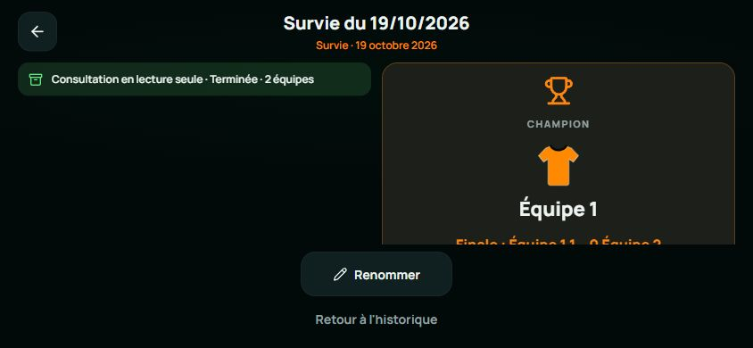
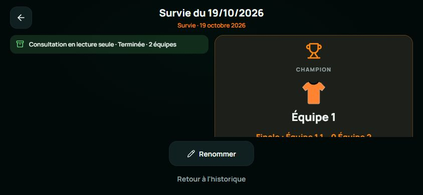
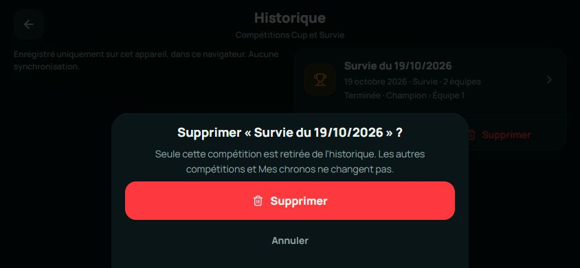
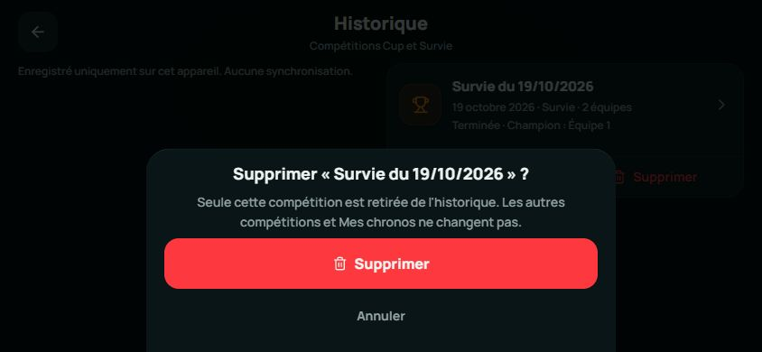

Roundr · Trois retouches paysage
Lovable à gauche · Expo corrigé à droite · mêmes vues 844 × 390 · rendu navigateur
Introduction · 844 × 390
Lovable · référence figée
Rond central : 84,92 × 84,92 px dans les deux applications. Logo, slogan et CTA Expo restent à leurs coordonnées précédentes.
Historique — détail · 844 × 390
Lovable · référence figée

Expo · après retouche

Renommer : 168,78 × 50 px, à x = 337,60 / y = 282 dans les deux applications. Interligne des actions : 4 px.
Confirmation de suppression · 844 × 390
Lovable · référence figée

Expo · après retouche

Fenêtre : 520 × 225,67 px, à x = 162 / y = 164,33 dans les deux applications. Ancrage en bas ; boutons de 56 et 44 px.